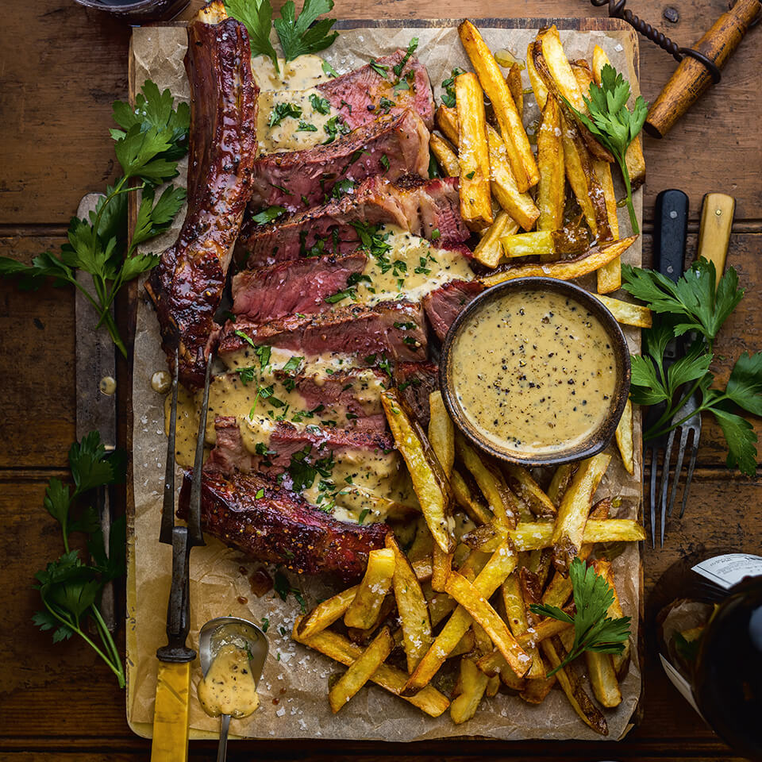

Steak with fries

Ingredienten
- 3 lbs russet potatoes scrubbed but not peeled
- peanut oil for frying
-
2 bone-in rib eye steaks each about 1½ inches thick, at room temperature
- 1 tbsp extra-virgin olive oil
- sea salt and freshly ground black pepper
- 2 tbsp unsalted butter
- 2 garlic cloves
- 2 thyme sprigs
- 2 rosemary sprigs
Bereiding
-
Cut the potatoes into ¼-inch-thick batons and place in a large bowl of
cold water. Refrigerate for 1 hour. Line a large baking sheet with paper
towel and set a wire rack on top.
-
In a large Dutch oven or high-sided, heavy-bottomed pot, pour the peanut
oil to a depth of 3 inches. Heat over medium heat until it reaches 325°F
on a deep-frying thermometer. Drain the potatoes and pat completely dry
with paper towel.
-
Working in batches, fry the potatoes for 5 to 6 minutes, turning them
every minute or so. The fries will be lightly colored at this point.
Transfer the partially cooked fries to the wire rack while you carry on
frying the remaining batches; do not discard the oil (you’ll need it
again later). Let rest on the wire rack while you make your steak.
-
Heat a 12-inch cast-iron skillet over medium-high heat and get it as hot
as the sun. Open any kitchen windows and turn on your hood fan (trust
me).
-
Brush all sides of each steak with olive oil and season well with salt
and pepper. Remember, you can’t season the inside of the steak, so go
extra generous on the outside.
-
Place your steaks in the skillet and immediately set a timer. Every
minute on the minute, flip the steaks. At the 7-minute mark, add the
butter, garlic, thyme and rosemary to the skillet. Continue cooking,
constantly basting the steaks with garlicky herb butter and flipping
every minute, until a digital thermometer inserted in the thickest part
of the steaks reaches 130°F (perfect for medium-rare, as the internal
temperature of the steaks will continue increasing as they rest).
Transfer to a cutting board and let rest at least 7 minutes.
-
While your steak rests, finish frying your fries and make your whisky
peppercorn sauce. Heat the oil until it reaches 375°F on a deep-frying
thermometer. Working in batches, cook the fries again for 2 to 4
minutes, until golden brown and crispy. Drain on the wire rack, and
generously season with salt. Let the oil return to 375°F before each
batch.
-
Heat the peppercorns in a medium skillet over medium-high heat and toast
for 2 minutes. Add 2 tbsp of the butter, shallots, garlic and a pinch of
salt, and cook, stirring often, until the shallots are softened, 3 to 4
minutes. Remove the skillet from the heat and add the whisky. Return the
skillet to the heat and allow flame to burn off the alcohol, about 1
minute (you can use your trusty barbecue lighter to light a flame here –
just be very careful, please).
-
Add the cream, stock, any juices that have come out of the resting
steaks and lemon zest and bring to a boil. Let the sauce cook until
thickened, 2 minutes. Remove from the heat, stir in the remaining 2 tbsp
of butter and season to taste with salt.
-
Slice the steaks against the grain into thin slices. Divide among four
plates and spoon some of the sauce over. Serve with a pile of fries
alongside.